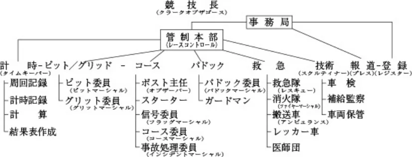

JAF公認審判員服務要項(レース)
JAF の公式サイトではありません。JAF が公開する PDF を自動変換した非公式の検索用アーカイブです。記載内容は必ず JAF の原本 PDF で出典をご確認ください。 検索と AI 質問つきのビューアで開く
P.1ＪＡＦ公認審判員服務要項
（レース）
１．序 文（General ）
今日、モーターレースは観るスポーツとして世界中の人々が関心をもち、ビッグイベントに数万の観衆が集まることも珍しくない。モーターレースを開催するには膨大な費用を投じてつくられた近代設備のサーキットと、高価なマシンで参加するエリートな人々が必要となる。このためモーターレースは一国の文化の象徴とさえいわれている。モーターレースはこのようにお金がかかるうえに、あらゆる天候状況や突発的危険現象をも克服しなければならず、モーターレースの参加者は余程の覚悟と情熱がなければならない。
モーターレース運営上、絶対に欠くことのできないオフィシャルにとってもこのことは同様である。そのうえオフィシャルにはその役務に関して豊かな知識と優れた技術を身につけていることが要求される。この知識や技術はできる限り多くのレースに参加して、あらゆる経験を積むことによってのみ習得できるものである。
オフィシャルには“信頼”ということばがすべてである。参加者や仲間から信頼されてこそレースに必要なオフィシャルとしてオーガナイザーから重要な役務を委嘱されるのである。選ばれた以上はその信頼に応える行動をとらなければならない。たとえ役務の内容が簡単なものであってもそれは競技運営上重要なものなのである。
したがって、もし何かの都合で、引き受けた役務を果たせないときには、前もって申し出て代理者を推薦することが必要である。遅刻の場合は同様に必ず事務局に連絡して応急対策をたててもらうことを怠ってはならない。モーターレースは、必ず一定の人員のオフィシャルが確保されなければならないことを忘れないこと。
競技中は参加者、報道関係者、一般観衆等あらゆる人々と接触の機会が生じる。オフィシャルはすべての人々に対して親切をむねとし、丁重なうちにも毅然たる態度で役務を遂行してこそ第一級のオフィシャルとしての信頼をかちとることができるのである。
２．参加登録（Registration/Signing-on ）
１）各オフィシャルは役務を引き受けた時点から、自己の任務について十分な研究を行い、責任をもって、役務の遂行ができるよう準備を整えておくことが大切である。
２）指定された日時に遅刻することなくレース場に集合し、各セクションの責任者に到着を報告するとともに、参加登録簿に署名し、オフィシャルライセンスを提出する。
この署名は有資格者として自らすすんで参加するものであることを表明すると同時に、万一、参加中に死傷その他の損害を受けた場合でも、統轄団体である日本自動車連盟をはじめとして、オーガナイザー、コースオーナー等の団体ならびにその従業員、雇用者、あるいは参加者、ドライバー、ピットクルー、オフィシャル等の個人に対し、その責任を追求したり、補償を要求したりしないことを誓約するものである。
３）参加登録手続きが終了すると身分証、車両通行証、公式通知、プログラム、その他文書ならびに物品が交付される。
３．入 場（Admission ）
１）参加登録の際に交付された身分証、通行証を大会期間中よく見えるところにつけていなければならない。
２）オフィシャル専用のゲート、通路が指定されている場合には、必ずそこを通って各セクションの集合場所に集まり、そこで役務についての最終的指示を受けた後、準備された車両または徒歩でそれぞれの持場につく。
４．駐 車（Parking ）
オフィシャル個人の乗用車はオフィシャル専用の駐車場に駐車しなければならない。駐車場に置く車には貴重品や危険物を残さず、完全に施錠して盗難および火災の予防に留意しなければならない。
５．服務中の遵守事項（Behaviour ）
各オフィシャルは委嘱された役務について完全に理解していなければならない。そのためには事前にそれぞれの役務について十分な研究を行い、もし疑問な点があれば各セクションの責任者によく質問したうえで統一された見解の下に役務
P.2の遂行に当たることが大切である。特にコース周辺の役務につく場合には危険が伴うので次の項目の遵守を心がけること。
１）コース委員およびピットに携わる技術委員はヘルメットを着用すること。（ＪＡＦ規定の公認審判員用ヘルメット）
２）競技中はコースから目を離さず、車が進行して来る方向には絶対背中を向けないこと。特に信号委員はできれば２名が１組となって、それぞれ反対の方向を確認できる態勢をとることが望ましい。
３）必要な場合を除き、必ず防護柵の後にいること。責任者からの指示があった場合、およびドライバーの救出、事故車の処理等で防護柵の前方に出る場合は十分に安全を確認すること。
４）任務以外では１ヵ所にかたまらないこと。また無断で自己の持場を離れないこと。
５）競技中は腰を下ろさず、いかなる事態にも即座に対応できる姿勢でいること。
６）コース上にある異物はすべて高熱を帯びていることを考慮に入れて処理すること。（手袋、ほうきを使用するか靴でけとばす。）
７）信号合図に用いられるものと紛らわしい色の衣服を着用しないこと。
８）私用のカメラや録音器等を持ち込まないこと。
９）事故処理に当たったもの、および事故を目撃したものはレース終了後も留まって、責任者からの許可があるまでサーキットを離れないこと。
６．役務分担（Duties）

１）各セクションごとに持場につくと同時に備品、用品の点検を行い、準備を整えること。
２）各セクションの責任者は、各オフィシャルが配置についてすべての準備が整ったことを確認したら、直ちにレース管制本部の管制委員長にその旨を連絡する。
３）管制委員長は各セクションに必要な伝達事項を連絡すると同時にその準備状況をとりまとめ競技長に報告する。
７．監督役務者・一般要項
１）国際モータースポーツ競技規則、国内競技規則、競技会特別規則その他の諸規則を熟知し、その競技会における通信連絡のシステムを研究したうえで必要なセクションと迅速に連絡がとれる方法を確立しておかなければならない。
２）必ず一般のオフィシャルよりも先に会場に到着し、競技長から必要な指示を受けて後から到着する配下のオフィシャルを完全に掌握し、その指示事項を徹底させる。人員に不足がある場合はその旨を報告して補充を要請する。
３）配下のオフィシャルにはそれぞれの能力に応じた任務を与える。万一その任務に適当でないことがわかったら直ちに配置転換するかまたは交替させ、事故を未然に防止する。自らの意志で参加したクラブマンにはたとえ過失があったとしても、その責任を問うことはできない。むしろ不適当な配置や任務をそのまま続けさせた監督役務者自身の判断について責任を問われることになるので思い切った決断が要求される。
４）配下のオフィシャルの待遇に心を配り、適当な場所を設けて休息を与えること。
５）持場についたら直ちに人員、車両、機材等を点検し、配下のオフィシャルを指揮して必要な準備を完全に整え、その旨を競技本部に連絡する。人員、機材の補充の手順およびその限度をあらかじめ知っておくこと。
６）一日の終了に際し、解散の指示があるまで配下のオフィシャル全員を掌握しその支配下にとどめておくこと。特に事故に関係した部署にあってはこのことは重要である。
７）事故があった場合のオフィシャルの証言の重要さについて配下の人々に徹底させておくこと。これらの証言は単に記録に残るだけでなく法廷に提出される場合もある。
８）監督役務者はやむをえない事情がある場合を除いて受け持ち区域から離れてはならない。ただし、万一の場合に備えて必ず代理者または補助員がその任務を引き継ぐことができるようにしておき、やむをえず持場を離れる場合には必ずその任務を代行させなければならない。
P.3９）配下のオフィシャルの宿舎を確認し、その宿舎までの往復に使用する車両を決定する。
10）宿舎においては部屋の割り当てを確認して配下のオフィシャルを誘導する。また必ずミーティングを行い翌日の任務を徹底させる。このことは団結を固め、役務遂行に完璧を期すためにも有効である。
宿舎での規律の維持、火災、盗難の予防も監督役務者の任務の一部であり、配下の全員が翌日の任務につけるように心を配らなければならない。
11）定められた集合時刻に配下のオフィシャルが遅れぬよう宿舎を出発する際に人員の確認を行うとともに、忘れ物のないように注意を与える。
12）公式予選および決勝レースの終了後は記録、報告書等を集めて整理のうえ競技長に提出する。その際重要事項については説明を加えること。
13）競技会の終了にあっては各受け持ち区域に配備された備品、機材等を持ち帰り、員数を点検したうえで大会事務局に返還するよう監督する。その後Ｒ項と預けたライセンスを受領し配下の各オフィシャルに手渡しＲ項に対する受領証を取りまとめて大会事務局に提出する。
８．管制委員長（Chief observer）
レースの管制本部にあって管制委員を指揮し、各セクションとの連絡および情報の収集に当たり、常に競技会全般の進行状況を把握して競技長を補佐する。
１）競技会の進行がタイムスケジュール通り進行しているかどうかを確認し、その状況を競技長に報告する。
２）一般連絡事項中、重要なものについては競技長の判断を要請し、その決定または指示事項を必要なセクションの責任者に伝達する。
３）対観客放送委員と常に密接な連絡を保って、競技会の進行状況、安全に関する注意事項その他対観客広報について必要な指示を伝達する。
４）競技会を通じてオフィシャルカーがコースに入る場合の管制について必要な指示を与える。ただし、オフィシャルカー以外の車両がコースに入る場合は競技長の判断を要請するものとする。
５）競技開始直前、通信システムを通じて全ポスト主任にコースの安全について確認し、競技長に報告する。
６）競技中、各監視ポストにおける信号員が適正な信号合図を行っているかどうかを確認し、必要に応じて信号合図について指示を与える。
７）競技中事故発生の報告を受けた場合、軽微なものについてはあらかじめ打ち合わせた救急要項に従って必要な指示を与え、競技の続行に影響のある重大なものについては直ちに競技長に報告し、その判断を要請する。
８）競技中の反則についての連絡があった場合は直ちに競技長に報告し、その指示を担当セクションならびに参加者に伝達する。
９）レースが中断された場合の処置についてあらかじめ関係者と打ち合わせ、実施に当たっては特に迅速・的確な指示伝達を行うものとする。
９．コース委員長（Chief course marshal）
競技本部にあってコース委員、信号員を統轄指揮し、コースとその周辺の秩序と安全の確保に当たるのがその任務である。
１）各監視ポストの人員の配備についてあらかじめ計画を樹立し、それぞれの監視区域ならびに通信連絡の方式を確立する。
２）各監視ポストにおいて通過する競技車両の順位を記録するかどうか、その他必要事項について競技長の指示を受け、各ポスト主任に伝達する。
３）事故が発生した場合のポスト主任以下がとるべき体制とその実施要領を明確にし、救急委員長とも十分に打ち合わせておく。
特に事故の記録と報告の様式について各ポスト主任に徹底させ、事故に関係したものは必要時間サーキットに留まるよう指示する。
最少限必要な報告事項は次の通り。
（１）コース状況（競技続行のため必要なコースが確保されているかどうか？）
（２）火災発生の有無
（３）死傷者の有無（死傷者のある場合はその氏名）
（４）事故発生時刻
P.4（５）事故発生場所（監視ポスト番号とこれに対する位置）
（６）事故に関係した競技車両の番号
（７）出動した緊急車両と人員（消防車、救急車、搬送車、レッカー車、医師に区分する）
（８）事故およびその処理の概要
４）競技開始直前に必ずコースを一巡して①コース周辺施設（ガードレール、フェンス等）の安全性ならびに②コースクリアの状況を確認、観客侵入の有無を点検して、管制委員長を通じて競技長に報告する。
５）競技中またはインターバルに各監視ポストに配付すべき物品を整え、配布の時機について管制委員長と打ち合わせる。
10．計時委員長（Chief time keeper）
計時室にあって計時委員を統轄指揮し、迅速で正確な競技結果を作成し、競技長の承認を得たうえで事務局を通じてこれを発表するのがその主たる任務である。
１）公式予選と決勝レースの方式に応じて、発表する成績表の作成要領について、あらかじめ競技長の指示を受けておくこと。
２）競技本部と常に密接な連絡をとり、競技中の反則とこれに対するペナルティーを確認し、成績表の作成に当たり順位の最終決定および必要記載事項について傘下の担当者に指示を与える。
３）参加者ならびに報道関係者に対して中間発表を必要とする場合には、その様式と手順について競技長と打ち合わせ決定しておくこと。
４）公式予選および決勝レースが中断された場合の処置についてあらかじめ競技長の指示を受け、傘下の全員に徹底させておくこと。
５）順位の測定について疑義を生じた場合は競技長の判断を要請するか、または競技長を通じて大会審査委員会の決定を仰ぐこと。
６）計測器具、用紙等について事前に点検し、適正な状態であるかどうかを確認し、必要があれば調整、補充等を大会事務局長に要請し、競技長にその旨を報告する。
11．技術委員長（Chief scrutineer ）
技術委員、車両検査委員、補給監察委員等を統轄指揮してドライバーならびに参加車両の資格と安全性について公正な判定を行い、その結果を競技長に報告するのがその主たる任務である。
１）競技会特別規則書または公式通知によって示されたタイムスケジュールに従って公式車両検査を実施する。
２）公式車両検査に必要な器材および書式についてはあらかじめ点検し、必要があれば調整、補充等を大会事務局長に要請する。
３）ＦＩＡまたはＪＡＦの定めた車両規定を熟知し、最も新しい補足規定、または通達等について研究し、これを配下のオフィシャルに徹底させておかなければならない。
４）ドライバーおよび参加車両に関してはいつでも検査できる権限を有するものであり、万一これらの参加資格に疑義がある場合は修正を命ずるかまたはその出走を拒否し、競技長にその処置について報告する。
５）決勝レース中は競技本部またはピットエリアの近くに位置して競技者に対するピットでの燃料補給、修理調整等の作業の監察を指揮し、規則違反があった場合は直ちに競技長に報告する。
６）公式予選後ならびに決勝レース終了後の車両保管の実施要領を確立して参加者に徹底させ、保管持出車両についてその可否を決定する。
７）入賞者の再車検を実施し、必要に応じて分解検査を行う。分解を命じた場合はその費用について算定し、これらの結果を速やかに競技長に報告する。
12．チーフスターター（Chief starter ）
公式予選ならびに決勝レース中、コントロールラインの近くに位置して、競技本部と密接な連絡をとりつつ、スタートからフィニッシュまで競技車両のコントロールに当たる。特に走行中のドライバーおよびそのピットクルーに対し、競技本部からの指示事項を信号合図で知らせるのがその主たる任務である。
１）最も目立つポジションに位置する関係上、服装、態度に細かい配慮を払うこと。（できれば統一されたユニホーム着用が望ましい。）
２）ピットレーンに出入りする競技車両に注意し、警報器を的確に操作してピットエリアの安全確保に努めなければな
P.5らない。
３）コントロールライン付近で事故が発生した場合には、迅速な判断によって信号旗を操作し、事故処理に必要な行動、報告等を行うことはポスト主任と同様である。
13．パドック委員長（Chief paddock marshal）
大会期間中を通じてだれよりも早く競技場に到着し、パドック委員を統轄指揮して、パドック導線を確保するとともに、ガードマンと密接な連係を保ってパドック全般の安全と秩序の維持に当たる。さらに、タイムスケジュールに従って競技会のプログラムが円滑に進行するように参加者を誘導し、パドック導線に従って移動進行の一切の指揮に当たることをもってその任務とする。
１）パドック内の火災、盗難の予防に関してパドック委員ならびにガードマンの監視を徹底させる。
２）ピットエリアへ資格のないものが入らぬようチェック方式を確立し指導する。
３）事故発生時における緊急通路の確保、救急車の誘導、救急医療センター付近の警備体制等についてあらかじめ打ち合わせ、その指揮に当たる。
４）ガレージ、ピット、車両保管場所等にいる各チームの責任者、あるいはドライバーに対する競技本部からのメッセージの伝達、呼び出し等に迅速な協力体制を整える。
５）パドック内における参加者の行動について常に十分な配慮を払い、必要に応じてこの行動を規制したり、あるいは保護、援助を与えるようパドック委員ならびにガードマンに指示を与える。
14．ピット／グリッド委員長（Chief pit/grid marshal）
公式予選ならびに決勝レース中、ピット委員、グリッド委員を統轄指揮し、ピット／グリッドの管理ならびにこの区域における競技の安全と秩序の維持を図るのがその主たる任務である。
１）ピット区域は参加チームの根拠地となるところであり、グリッド区域は競技の中で最も重要かつ危険なスタートが行われる場所であり、いずれも極度に緊張した雰囲気となるところである。したがって常に冷静な判断と臨機応変な外交的手腕による処理が要求される。ドライバーはもちろんのこと各チームの要員やプレス関係者との無用の摩擦を起こさぬよう、あらゆる出来事を想定して事前に配下の各委員ときめの細かい打ち合わせを行っておかなければならない。
２）競技本部から各チームあるいは走行中のドライバーに対する伝達事項の伝達方法について定め徹底させておくこと。
３）ピットレーンの作業区域への立ち入り制限を強力に指導すること。プレス関係者といえども競技に支障をきたす恐れのある場合、あるいは安全上必要とする場合には規制の対象として協力を要請する。
４）ピット出口の管理はグリッドの管理と同様に重要な役務の一つであることを認識し、有能な経験者をその部署に任命すること。
５）競技本部との連絡には専任担当を指名し、常に密接な連絡が維持できる体制を整えておかなければならない。
６）ピット／グリッドはいずれも非常に目立つ場所であり、そのうえピット要員やプレス関係者が多数出入りする場所でもある。一見してオフィシャルとして判別のつく統一された服装と整然とした行動について十分な指導と打ち合わせを行っておく必要がある。 （できれば統一されたユニホーム着用が望ましい。）
15．救急委員長（Chief medical & first aid）
大会期間中を通じ、救急医療センターならびに救急医療器材、薬品、救急、車両等の管理に当たり、救急委員を統轄指揮するとともに医師団、看護師、その他救急、消火、医療の各関係者と密接な連絡を保って万全の救急体制を整えるとともに、万一の場合はその総指揮に当たり迅速なる救急作業を実施するのがその任務である。
１）競技長と打ち合わせ、緊急配備計画を作成し、それに従って人員、車両、機材、薬品を分散配備し、万全の救急体制を整え、その統轄指揮に当たる。
２）医師団長と打ち合わせ、場内の救急医療センターならびに場外の協力救急病院の受け入れならびに搬送体制を整え、これらを確認のうえ競技長に報告する。
３）医師団長とは常に密接な連絡を保ち、医療器材、薬品等の補充についてあらかじめ十分な体制を整え、競技の進行に支障のないようにしなければならない。万一、補充がつかず、その不足が競技運営上に重大な影響があると思われる場合は、直ちにそのむねを競技長に報告する。
４）救急車のドライバーには必ずそのサーキットの走行に慣熟した者を指名する。できればレーシングドライバーとして経験のある者が望ましい。
P.6５）事故発生と同時に、医療センターに連絡し、負傷者の受け入れ態勢を整えさせる。
６）医師団の渉外業務に協力するとともに、医師、看護師の待遇に心を配り、その活動を容易にする。
７）事故に関する一切の公表は競技長のみが行うものであることを了承し、これに協力するとともに誤報による無用の混乱を避けるため、救急関係者に事故に関する一切の口外を差し控えるよう徹底させる。
16．医師団長（Chief medical officer ）
救急医療センターにあって医師団ならびに看護師を統轄指揮し、救急患者に対する治療、ならびに場外医療機関、警察その他の関係官庁に対する連絡に当たることをもってその任務とする。
１）ＦＩＡの定めたモーターレースにおける救急医療基準について熟知しておくとともに、これを各医師、看護師に徹底させる。
２）準備された医療器材、薬品について点検し、万一不足、不備がある場合には救急委員長にその整備を要求する。
３）救急委員長が樹立した緊急配備計画を検討し、救急委員長と合議のうえ、各所に配置される医師、看護師の人員数を決定し、これらの人々が携行する医療器材、薬品について指示を与える。また、配置場所への移動、緊急の場合の出動等に関しては救急委員長からの連絡により医師団長が決定する。
４）実施された医療処置ならびにその診断について、競技長に報告する。
５）場外の医療機関への移送の可否を決定する。移送の場合は当該場外医療機関に連絡をとってその受け入れ体制を確認するとともに、これを競技長に報告する。
17．管制委員（Communication officer）
１）事前に通信システムならびに器材を点検し、競技会の期間中管制委員長の指示に従って各セクションとの通信連絡ならびに情報の収集に当たり、常に競技の進行状況を把握しておく。
２）競技開始直前から競技終了までは特に各監視ポスト主任との連絡を密にし、常にコースおよびその周辺の安全確認をする。
３）公式予選ならびに決勝レースのスタート／フィニッシュに際しては、スターター、計時、場内放送等の各委員と連絡を密にしてその進行が円滑に行われるようにする。
４）競技中、各監視ポストで表示される信号合図を確認し、管制委員長に報告する。（ただし、瞬間的に表示されるものを除く。）
５）競技中事故が発生した場合は、負傷者の救急を優先とし万難を排して現場（監視ポストならびに出動した緊急車）との連絡を確保し、事故および事故処理状況を確認する。同時に決勝レースの停止、または中断の必要があるかどうかを判断して管制委員長に報告する。
最少限必要な確認項目は次の通り。
（１）コース状況（競技続行のためのコースが確保されているかどうか？）
（２）火災発生の有無
（３）死傷者の有無（死傷者のある場合はその氏名）
（４）事故発生時刻
（５）事故発生場所（監視ポスト番号とこれに対する位置）
（６）事故に関係した競技車両の番号
（７）出動した緊急車両と人員（消防車、救急車、搬送車、レッカー車、医師等に区分する。）
（８）事故およびその処理の概要
６）競技の経過について記録を作成し、競技長の指示により事務局を通じ競技関係者ならびに報道関係者に対して発表する。
７）競技終了後は一切の記録を整理し、管制委員長を通じて競技長に提出する。
18．ポスト主任
コース周辺の配置についたポスト主任は、自己の受け持ち区域の出来事について細大もらさずレース管制本部に報告する。
通信連絡はすべて明瞭、簡潔に次の要領で行うものとする。
１）ポストナンバー
２）発生時刻（24時間）
P.7３）車両ナンバー
４）報告事項（スピン、停止、徐行中、クラッシュ、接触、転倒、ドライバー脱出、無事、負傷、コース閉鎖、コースＯＫ、多重事故発生、赤旗／救急車要請等）
５）処置（石灰散布、消火、ドライバー救出、車両安全確保、コース清掃等）
ポスト主任は、口頭での報告を必ず報告書にまとめ、競技のインターバルにマーシャルカーに託して管制委員長あてに送る。管制委員長はこれを一括点検して競技長に提出する。
19．コース委員（Course marshals ）
１）コース委員はイベントを予定通り円滑に進行させるため、常にコースをクリアな状態で維持することがその任務である。防護柵を越えてトラック周辺の危険な場所に侵入しようとする人々を整備員と連係して未然に防止するとともに、コースの上の障害物に対し常に細心の注意を払い、必要に応じてこれらを排除する。
２）トラックの舗装面の汚れは重大事故につながる。配置についたら直ちにトラック上の水溜り、オイル、砂、小石、タイヤかす、金属破片等を点検し、走行が開始される前に清掃除去する。
３）事故が自己の担当区域で発生した場合は、救急委員長の指揮下に入って事故処理を手伝うものとする。ただし、現場に全員が殺到してはならない。現場での多過ぎる人員は、援助となるよりむしろ作業の妨げとなることが多い。１台の車両に対する適正な救急作業員は４〜５名が限度である。余剰人員は次に起こるかもしれない事故に対して待機するか、場合によっては現場に集まる群衆を警備員と協力して制御し、救急作業を側面から援助することも必要である。
４）救急作業終了後の事故車両の排除ならびに事故現場付近のトラックの清掃を、できる限り迅速に行ってスケジュールの回復を図る。
５）報道関係者、ＴＶ、映画の撮影ならびに録音技術者等で特にトラックサイドにいることを許されているものがあることを了承していなければならない。ただし、この場合は、あくまで腕章その他の身分証を明瞭に見えるようにつけているものに限られるが、これらの人々に安全確保ならびに火災防止の必要な指示を与えること。
６）観衆に対しては親切を旨とし、言動を慎むこと。ただし、禁止された区域や危険な区域への立ち入り、その他レースの進行の妨げとなるような行為に対しては毅然とした態度でこれを制止し、必要に応じて警備員の増強をポスト主任に要請する。
７）故障その他でコース上に停止した車両をできる限り速やかに取り除くかまたは安全な場所に移すよう処置し、コースをクリアに保って他の走行車の安全を図るものとする。この迅速な処置はイベントのスケジュールを予定通り維持するうえからも大切なことである。
８）黄旗が表示されている区域における追い越しについて厳重に監視し、やむをえざるものと、不正かつ危険なものとを明確に区別して厳正な判定を下さなければならない。不明確な判定はかえってトラブルの原因となる。
20．救急隊員（Incident officers ）
１）救急委員長またはポスト主任の指揮下にあって事故処理を担当する。救急委員長およびポスト主任と事前に十分な打ち合わせを行い、救急車や消火車が配置されている場合にはこれらの責任者ならびに医師とも緊密な連係を保ち、それぞれの任務の範囲と救急作業の実施要領について確認し合うとともに救急備品について点検しておく。
２）事故に際しては現場にいち早く駆けつけて火災を未然に防ぎ、ドライバーを救出する。
その際、１名は事故の状況を把握して指揮をとるとともにポスト主任への連絡に当たる。さらに、他の１名は近づいてくる車両に目を注ぎ、作業中の全員の安全を図ることも忘れてはならない。
３）消火ならびにドライバーの救出作業が順調に行われていることを確認したら、その状況を、あらかじめ打ち合わせた合図によってポスト主任に知らせる一方、人員、車両、機材等をできるだけ節約して活用し、さらに起こるかもしれない事故に対処できる体制を整える。これと反対の場合は時機を失せず、応援をポスト主任に要請しなければならない。
４）車両が燃えている場合を除き、負傷したドライバーは最も近い防護柵の後に収容し、医師の到着を待つ。その後の負傷者の搬送については医師の指示に従うこと。
５）ドライバーが無事に車両から脱出するかまたは消火、救出作業が終了した後は、次の事故に備えてできる限り速やかに各緊急車両とその人員はもとの配置場所に戻って待機するのを原則とする。このとき、残された事故車両の処理は、コース委員にゆだねられるものとする。
６）負傷したドライバーを医療センターへ送る場合は、搬送車の到着を待ってこれに託するものとし、救急車をこの目
P.8的に使用してはならない。救急車は次の事故に備えて定位置で待機するのを原則とする。
７）救急用品が不足した場合は、直ちにその補充をポスト主任に要請する。その補充が緊急を要する場合は、競技中のコースを横切っても届けられるものとし、この要請に関する決定はポスト主任が行うものとする。（コース横断の際の合図は付表を参照のこと。）
21．消火隊員（Fire marshals ）
１）事故発生と同時に、最も近くにいる消火隊員は現場に駆けつけ、火災の発生を未然に防止する。（メインスイッチを切るかまたはバッテリーを外す等の応急火災予防措置をとること。）
２）車両がすでに火災を起こしている現場に駆けつけたときは、消火訓練教程に従って敢然と消火に当たる一方、救急隊員とペアを組んで、ドライバーの迅速な救出を図る。（ＦＩＡ国際モータースポーツ競技規則付則Ｈ項第３章「緊急役務」参照）
３）事故現場から離れた場所にいる消火隊員は事故発生と同時に応援体制を整えて、ポスト主任の指示を待つ。いたずらに多数のものが前後の考えもなく現場に殺到しても、かえって消火活動の妨げとなることは救急隊員の場合と同様であり、二次、三次の事故に備えることも忘れてはならない。
４）事故現場において消火に成功するか、または全くその心配がなくなった場合には、速やかに元の位置に戻り、消火器その他の機材を点検して不足したものがあれば補充をポスト主任に要請する。
５）決勝レースまたは公式予選中は消火活動に必要な服装を着用して、いつでも出動できる態勢で待機していること。
22．救急車両および搭乗員（First aid & Ambulance）
１）救急車両区分 （１）高速救急車（軽消火器、救出用機材、蘇生装置）
（２）救 急 車（ 〃 ）
（３）搬 送 車（応急手当用医薬品、蘇生装置）
（４）消 火 車（消火器材）
（５）レッカー車（車両牽引回収用機材、破壊装置）
（６）マーシャルカー（競技長の代理またはコース委員長が同乗する）
イベントの種類やその性格に応じて医師、看護師、救急有資格者、ファイアーマン、レッカー作業員等の各専門家が適宜にチームを組んで搭乗し配置につく。必要とあればマーシャルカーも指揮連絡車として出動する。
２）すべての救急車両は公式予選および決勝レース中、いつでも発進できる態勢になければならない。このためにはエンジンを暖めておくことが必要である。
３）各配置場所についた救急車両の搭乗員は、その区域の責任者であるポスト主任にその到着と装備の内容について報告し、出動に関する打ち合わせを行った後、その指揮下に入るものとする。
４）配置場所についた救急車両は、ポスト主任からの指示がない限り、他の場所に移動しないこと。
５）出動する現場については正確にポスト主任の指示を受けること。
６）特別な場合を除き、救急車、消火車、レッカー車等で負傷したドライバーを搬送してはならない。これらの車両は、その作業を終了するかまたはその必要がなくなった場合には直ちに定位置に戻り、その機材、装備を点検整備して次の事故に備える。
７）公式予選および決勝レース中の出動に際しては、必ずコースの内側に沿って走行し、競技車に対して危険または妨げとならぬようにすること。現場付近でやむをえずコースを横断するときには、十分安全を確認して敏速に行動しなければならない。この場合、付近のコース委員はその誘導に当たり安全を図るものとする。
８）機材の不足、車両の故障等については速やかにポスト主任に報告し、競技の進行に支障のないように注意すること。
23．事故処理の一般注意事項
１）事故処理成功のかぎは、担当者の一人一人が自己の動きを考えて、それを素早い行動に移すことにある。このとき自分自身の安全を常に念頭においていなければならない。コース上になんの考えもなしに、いきなり飛び出すことはいたずらに事故を増やすことになることを銘記すべきである。
２）コース上で競技車両の走行が続いている間は、一時たりとも近づいてくる車両から目を離してはならない。
３）ドライバーの走行状態から、起こるかもしれない事故を予測して事前に準備を整えておくことは重要なことである。これによって貴重な時間を無駄にすることなく、恐ろしい火災を未然に防ぎ、ドライバーを安全に救出することができる。
P.9４）万一、火災が起きても決して恐れてはならない。効果的なチームワークで機材を有効に駆使して、風上から敢然として攻撃を加えることによって火災を消滅させることができる。
５）事故は予告なしに発生する。また、事故に同じ型はないものと考え、油断から事故に巻き込まれないように注意することが大切である。
６）競技の無事な進行に安心して居眠りをしたり、コースから目を離したりしてはならない。競技中は決して腰を下ろすことなく、いかなる突発事故に対しても直ちに行動できる態勢でいることが事故処理の要諦であり、自分自身の安全にもつながる。
24．信号委員（Flag marshals ）
１）配置についたらフラッグセット、信号灯を点灯し、隣接ポストとの見通しを確認する。準備が整ったらポスト主任に報告すること。
２）２名１組で役務につき、１名は危険予告（黄旗）、他の１名は追い越し（青旗）を取り扱うようにする。２名は互いに向き合って反対方向を監視すること。
３）事故発生の場合でもポスト主任から特に指示のない限り、持場を離れず自己の任務を遂行する。
４）原因がオイルによるものでなくても、コースが滑りやすく危険な状態になったら、オイル旗を表示してその個所をドライバーに知らせなければならない。
５）救急車両がコース上にいる間は、白旗および黄旗（事故現場付近）を使用して、これを競技車両から安全にカバーし、救急作業が安全、迅速に遂行されるように援護する。
６）信号委員は、特にＦＩＡ国際モータースポーツ競技規則付則Ｈ項を熟知していなければならない。
25．パドック委員（Paddok marshals ）
１）パドック委員はパドック委員長の指揮下にあって、パドック内の人員と車両の管理に当たる一方、タイムスケジュールに従って競技車両のコースへの出入りを誘導し、プログラムの円滑な進行を図る。
２）広範囲にわたるパドックは必要に応じて区分され、その各区分ごとに管理責任者を配置する。
３）パドック内の駐車は特に厳しく管理し、競技車、救急車の専用通路を含むパドック内の車両導線を確保すること。
４）パドック内における火災盗難の予防と安全について十分な管理指導を行う。特にパドック内における喫煙については厳禁すること。
定められた受け持ち区域から無断で離れず、常に監視と誘導を怠らないこと。
５）事故発生時における迅速な緊急通路の確保と医療センターへの緊急出入管理体制の実施は特に重要任務である。
６）ピット区域への通路、ガレージおよび車両保管場所の管理に当たり、一般の立ち入りを厳禁する。
７）言動を慎み、参加者ならびに観衆に対しては親切を第一としてパドック内の誘導整理に当たること。
26．ピット委員（Pit marshals ）
１）ピットレーンを含む、ピット区域全般の安全と秩序を保つ責任を有し、ピット規定についての判定に当たる。
２）ピットレーンに出入りする競技車両の速度に注意し、減速が不十分なものにはさらに減速するよう指示を与える。はなはだしく危険なもの、反則を繰り返すものについてはピット主任にペナルティーを科すように要請する。
３）ピットレーンとコースとの区分線を監視し、これを横切る競技車についてピット主任に報告する。この場合その行為がやむをえざるものかあるいは全く無謀なものであるかを判定し、必ず報告に付記しなければならない。
４）競技車両が割り当てられたピットの前に停止するかどうかを監視する。あやまって自己のピットを通りすぎて停止した車両については、直ちにエンジンを止めさせ、ピットクルーの援助の下に押し戻してピットにつけさせる。このときピットに進入してくる他の競技車両に対して十分な注意を払い、安全を確認しつつ誘導しなければならない。
５）ドライバーに合図を送る要員ならびにチームの計時要員がとどまることのできる場所（競技長によって指示された場所）について監視し、その安全についての指導ならびに余分な人員の排除を行う。またドライバーに送る信号がＨ項に規定されたものと紛らわしい場合にはこれを取り替えさせる。
６）補給監察員（技術委員）と密接な連係を保ってピット作業の際の安全と秩序の維持を図り、競技車両が再び発進してコースに戻る場合の誘導に当たる。
７）ピットストップ終了後の機材、部品等の後片付けを監督指導し、常にピット周辺をクリアに保つようにする。
８）特に火災予防に留意する。燃料補給作業が正しく（常に同じ要員）、安全に行われるように監視指導するとともに、チームの消火要員の態勢についてもチェックし、燃料がこぼれた場合には直ちにこれをふき取らせることも忘れては
P.10ならない。
９）レース中のオイルの補給は長距離イベントで特に規定された場合を除き、禁止される。不法なオイルの補給については他の競技車両に対する安全確保のうえからも厳重にチェックしなければならない。
10）競技車両のピットストップに関しては、出入り時刻、実施された作業内容等を記録し報告する。ピットストップが10分以上にわたる場合はさらに中間報告を行う。
11）ピットでリタイヤしたものについては、その原因に関するピット責任者の供述をとり、それが自己の所見と異なる場合には、必ず、その旨を記入して報告する。
12）競技長からの指示（ペナルティーの賦課、その他）をピット責任者に迅速、確実に伝達しその確認をとる。
13）ピット前には競技会特別規則書に規定された人員（当該ドライバーとそのピットクルー）と、特に大会組織委員会から許された報道関係者（明瞭に確認できるパスをつけているもの）だけが出ることが許される。競技の公正かつ安全な進行を保つため、必要な場合にはこれらの人々の行動についても規制するとともに、無許可の人々についてはその立ち入りを厳禁する。
14）タイムスケジュールおよび競技長の命令に従ってピット出口の開閉を管理する。特別の規定がない限り、レース終了の合図と同時にピット出口は閉鎖されなければならない。ピット出口の開閉は競技運営上にきわめて重要な関連があり、慎重で明快な管理が要求される。
15）ピット区域開閉の前後には必ずその全域の状況ならびに付帯設備、備品等を点検し、異常の有無を確認、報告する。
27．グリッド委員（Grid marshals ）
１）スターティンググリッドの設定とその管理ならびにこの区域における安全と秩序の維持がその主たる任務であり、競技長の指示でスタート審判の任務を兼ねる場合もある。
２）ＦＩＡの定める安全基準を熟知し、グリッドの設定に当たっては特に安全に関して慎重な配慮を払うものとする。
３）公式予選の結果に従って各レースごとに競技車両番号をグリッドに付し、スタート位置につく競技車両の誘導に当たるほか、チーフスターターに協力してスタートの進行管理全般に協力する。
４）パドック委員との密接な連絡を保って、タイムスケジュールに従ってコースに入る競技車両の誘導に当たる。
５）決勝レース中はコントロールライン付近にあって走行中のドライバーに対する信号合図の任務を分担するほか、ピットレーンに進入してくる競技車両を監視し、これを安全に誘導することもその任務の一部である。
６）グリッド委員はピット委員としても兼務する場合が多く、ピット委員の任務についても熟知していなければならない。
７）グリッドエリアはピットエリアと同様に報道関係者その他の出入りの多い場所であり、競技の進行に支障をきたさぬようこれらの人々を安全かつ厳正に管理しなければならない。
P.11手 信 号
両腕を伸ばして頭上にあげる。
「止まれ！横断は危険」１．
（掌を前方に向けること）
一方の腕を腰の高さで掃くように
「今なら安全,急いで渡れ」
振る。
２．
（掌を下方に向けること）
片方の腕を伸ばして顔上にあげる。
「医師を頼む！」
（掌を握る。できれば白いハンカ
３．
チを持つ）
両腕を頭上で交差させる。
「搬送車を送れ！」
（掌を握ること）
４．
両腕を肩の高さに水平にあげる。
「救急車／救急装備一式
（掌を下方に向けること）
を送れ」５．
＊ 上記の手信号は適当な通信機をもたないマーシャルからオブザーバーその他のオフィシャルに対して送られる信号合図であるが、重大事故の場合にはこれらの信号合図を待つまでもなく、各オブザーバーはその判断に基づいて競技本部に連絡をとるものとする。また信号合図を受けたものは了解の合図として同様の手信号を返すものとする。